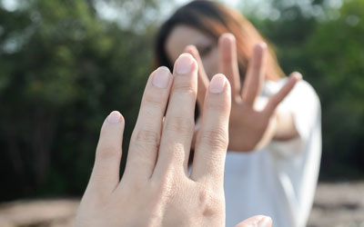

Home
Love in the Time of COVID-19
With coronavirus news overtaking much of the media coverage across the country, local residents have asked what to do about love during the ongoing pandemic.
COVID-19, as it is officially called, has led to federal and state government measures such as social distancing, which requires people be at least six feet apart from one another to not spread the virus. The virus is highly communicable, meaning it can be spread through sneezing and coughing. Many people are asymptomatic, meaning they don’t have the typical symptoms and could pass the virus to others. This is what we recommend:
- Enact social distancing guidelines when in public,
- Limit gatherings to under ten people,
- Blow air-kisses to not gross out your kids,
- Only hold hands when you are wearing gloves.
It may feel weird at first, but these guidelines balance both the need for human contact while keeping social distancing guidelines in place. Feel free to e-mail us with any questions at admin@trueweather.com.